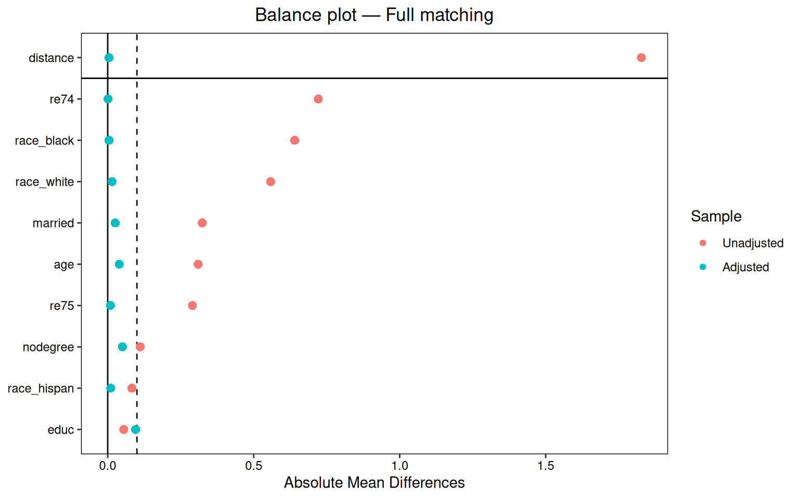

7 Matching Estimators
Matching is a way to make treated and control observations more comparable. For each treated observation, we look for controls with similar covariates. Then we compare outcomes in this matched sample.
This does not solve endogeneity. Matching only helps with selection on observables. If the treatment is selected on unobserved variables, matching will not fix the problem. The value of matching is that it makes the overlap problem visible. A regression can extrapolate quietly; matching often shows that there are no good controls for part of the treated sample.
In R, the main workflow is MatchIt for matching and cobalt for balance checking.
Related reading: A longer treatment is in Matching and Weighting Part 1 of Topics on Econometrics and Causal Inference, which credits Noah Greifer and coauthors (the
MatchIt/WeightItpackage authors).
7.1 Assumptions
Matching needs the same assumptions as other selection-on-observables methods:
- SUTVA — no interference, no hidden treatment versions.
- Ignorability (unconfoundedness) — conditional on \(X\), the treatment \(D\) is independent of the potential outcomes \((Y(0), Y(1))\).
- Overlap (positivity) — every value of \(X\) has positive probability of being both treated and untreated.
Even if ignorability is true, the covariate distribution can be very different in the treated and control groups. Matching tries to repair that before estimating the effect. If there is no overlap, it should not pretend there is overlap.
7.2 The Lalonde example
I use the Lalonde job-training data because it is the standard example for matching. The treatment is job training. The outcome is 1978 earnings. The data set in MatchIt is the observational version, so the treated and control groups are not balanced at the start.
Rows: 614
Columns: 9
$ treat <int> 1, 1, 1, 1, 1, 1, 1, 1, 1, 1, 1, 1, 1, 1, 1, 1, 1, 1, 1, 1, 1…
$ age <int> 37, 22, 30, 27, 33, 22, 23, 32, 22, 33, 19, 21, 18, 27, 17, 1…
$ educ <int> 11, 9, 12, 11, 8, 9, 12, 11, 16, 12, 9, 13, 8, 10, 7, 10, 13,…
$ race <fct> black, hispan, black, black, black, black, black, black, blac…
$ married <int> 1, 0, 0, 0, 0, 0, 0, 0, 0, 1, 0, 0, 0, 1, 0, 0, 0, 0, 0, 0, 0…
$ nodegree <int> 1, 1, 0, 1, 1, 1, 0, 1, 0, 0, 1, 0, 1, 1, 1, 1, 0, 1, 0, 0, 1…
$ re74 <dbl> 0, 0, 0, 0, 0, 0, 0, 0, 0, 0, 0, 0, 0, 0, 0, 0, 0, 0, 0, 0, 0…
$ re75 <dbl> 0, 0, 0, 0, 0, 0, 0, 0, 0, 0, 0, 0, 0, 0, 0, 0, 0, 0, 0, 0, 0…
$ re78 <dbl> 9930.0460, 3595.8940, 24909.4500, 7506.1460, 289.7899, 4056.4…The treatment is treat; the outcome is re78; the covariates are age, educ, race, married, nodegree, re74, and re75.
First check balance before doing any matching:
Show code
Balance Measures
Type Diff.Un M.Threshold.Un
distance Distance 1.7941
age Contin. -0.3094 Not Balanced, >0.1
educ Contin. 0.0550 Balanced, <0.1
race_black Binary 0.6404 Not Balanced, >0.1
race_hispan Binary -0.0827 Balanced, <0.1
race_white Binary -0.5577 Not Balanced, >0.1
married Binary -0.3236 Not Balanced, >0.1
nodegree Binary 0.1114 Not Balanced, >0.1
re74 Contin. -0.7211 Not Balanced, >0.1
re75 Contin. -0.2903 Not Balanced, >0.1
Balance tally for mean differences
count
Balanced, <0.1 2
Not Balanced, >0.1 7
Variable with the greatest mean difference
Variable Diff.Un M.Threshold.Un
re74 -0.7211 Not Balanced, >0.1
Sample sizes
Control Treated
All 429 185Several standardized mean differences are larger than 0.1. That is usually too large to call the sample balanced.
7.3 Distance measures
Matching needs a distance metric. The usual choices are:
- Propensity score: estimate \(\hat e(x)=P(D=1 \mid X=x)\) and match on the fitted probability. This turns many covariates into one score.
- Mahalanobis distance: match on the raw covariates using the squared distance \((x_i-x_j)'\Sigma^{-1}(x_i-x_j)\) (rankings are unchanged by the square root). This works better in low dimension.
- Hybrid: impose a propensity-score caliper, then use Mahalanobis distance inside the caliper.
7.4 Matching methods
7.4.1 Nearest-neighbour matching on a propensity score
Show code
m.nn <- matchit(treat ~ age + educ + race + married + nodegree + re74 + re75,
data = lalonde,
method = "nearest",
distance = "glm",
link = "linear.logit",
ratio = 1)
m.nnA `matchit` object
- method: 1:1 nearest neighbor matching without replacement
- distance: Propensity score
- estimated with logistic regression and linearized
- number of obs.: 614 (original), 370 (matched)
- target estimand: ATT
- covariates: age, educ, race, married, nodegree, re74, re75Now check balance again:
Balance Measures
Type Diff.Adj M.Threshold
distance Distance 0.9192
age Contin. 0.0718 Balanced, <0.1
educ Contin. -0.1290 Not Balanced, >0.1
race_black Binary 0.3730 Not Balanced, >0.1
race_hispan Binary -0.1568 Not Balanced, >0.1
race_white Binary -0.2162 Not Balanced, >0.1
married Binary -0.0216 Balanced, <0.1
nodegree Binary 0.0703 Balanced, <0.1
re74 Contin. -0.0505 Balanced, <0.1
re75 Contin. -0.0257 Balanced, <0.1
Balance tally for mean differences
count
Balanced, <0.1 5
Not Balanced, >0.1 4
Variable with the greatest mean difference
Variable Diff.Adj M.Threshold
race_black 0.373 Not Balanced, >0.1
Sample sizes
Control Treated
All 429 185
Matched 185 185
Unmatched 244 0Some covariates are still not balanced. Nearest-neighbor matching on a logit propensity score is simple, but it is not automatically good.
7.4.2 Full matching
Full matching forms subclasses with treated and control observations inside each subclass. It can put one treated unit with several controls, or one control with several treated units. It uses all observations and then assigns weights.
Show code
Balance Measures
Type Diff.Adj M.Threshold
distance Distance 0.0045 Balanced, <0.1
age Contin. 0.0393 Balanced, <0.1
educ Contin. -0.0956 Balanced, <0.1
race_black Binary 0.0043 Balanced, <0.1
race_hispan Binary 0.0103 Balanced, <0.1
race_white Binary -0.0146 Balanced, <0.1
married Binary 0.0259 Balanced, <0.1
nodegree Binary 0.0504 Balanced, <0.1
re74 Contin. -0.0009 Balanced, <0.1
re75 Contin. -0.0091 Balanced, <0.1
Balance tally for mean differences
count
Balanced, <0.1 10
Not Balanced, >0.1 0
Variable with the greatest mean difference
Variable Diff.Adj M.Threshold
educ -0.0956 Balanced, <0.1
Sample sizes
Control Treated
All 429. 185
Matched (ESS) 50.76 185
Matched (Unweighted) 429. 185In this example full matching gives better balance than simple 1:1 matching.
7.4.3 Mahalanobis matching
When the number of covariates is small, it is reasonable to match directly on the covariates with Mahalanobis distance.
Show code
Balance Measures
Type Diff.Adj M.Threshold
age Contin. 0.1269 Not Balanced, >0.1
educ Contin. -0.0430 Balanced, <0.1
race_black Binary 0.3784 Not Balanced, >0.1
race_hispan Binary 0.0000 Balanced, <0.1
race_white Binary -0.3784 Not Balanced, >0.1
married Binary -0.0595 Balanced, <0.1
nodegree Binary 0.0486 Balanced, <0.1
re74 Contin. -0.2476 Not Balanced, >0.1
re75 Contin. -0.1322 Not Balanced, >0.1
Balance tally for mean differences
count
Balanced, <0.1 4
Not Balanced, >0.1 5
Variable with the greatest mean difference
Variable Diff.Adj M.Threshold
race_black 0.3784 Not Balanced, >0.1
Sample sizes
Control Treated
All 429 185
Matched 185 185
Unmatched 244 07.4.4 Coarsened Exact Matching (CEM)
CEM coarsens covariates into bins and then exact-matches on the binned values. This is very transparent: if a treated observation has no comparable control in the binned covariate space, it is dropped.
Show code
Balance Measures
Type Diff.Adj M.Threshold
age Contin. 0.0493 Balanced, <0.1
educ Contin. 0.0446 Balanced, <0.1
race_black Binary 0.0000 Balanced, <0.1
race_hispan Binary 0.0000 Balanced, <0.1
race_white Binary 0.0000 Balanced, <0.1
married Binary 0.0000 Balanced, <0.1
nodegree Binary 0.0000 Balanced, <0.1
re74 Contin. -0.0427 Balanced, <0.1
re75 Contin. -0.0492 Balanced, <0.1
Balance tally for mean differences
count
Balanced, <0.1 9
Not Balanced, >0.1 0
Variable with the greatest mean difference
Variable Diff.Adj M.Threshold
age 0.0493 Balanced, <0.1
Sample sizes
Control Treated
All 429. 185
Matched (ESS) 41.29 65
Matched (Unweighted) 75. 65
Unmatched 354. 120CEM can drop many observations. That is not necessarily a problem. It is often telling us that the original sample does not support the target comparison.
7.5 Estimation after matching
After matching, we estimate the effect on the matched data. The matching weights come from MatchIt. With subclass matching, standard errors should be clustered by subclass: units within the same matched subclass are not independent draws – they were selected together specifically because they resemble each other on the matching covariates, and (for many-to-one or full matching) a single unit’s outcome can appear, re-weighted, in the “observation” for more than one comparison. Treating them as independent (ordinary or heteroskedasticity-robust SEs) understates the true sampling variability; clustering by subclass accounts for that within-subclass correlation.
Show code
m.data <- match_data(m.full)
fit <- lm(re78 ~ treat * (age + educ + race + married + nodegree + re74 + re75),
data = m.data,
weights = weights)
# Use marginaleffects for the average treatment effect with cluster-by-subclass SEs
avg_comparisons(fit,
variables = "treat",
vcov = ~subclass,
newdata = subset(m.data, treat == 1)) # ATT
Estimate Std. Error z Pr(>|z|) S 2.5 % 97.5 %
1977 704 2.81 0.00501 7.6 596 3357
Term: treat
Type: response
Comparison: 1 - 0The point is not that matching mechanically produces the “right” answer. The point is that after improving balance, the estimate is much less driven by obvious covariate differences.
7.6 Balance plots
cobalt::love.plot is the easiest way to see the balance change. It plots standardized mean differences before and after matching.
Show code

A useful rule is that standardized mean differences should be below 0.1, or below 0.05 if we want to be stricter.
7.7 Matching with replacement vs without
By default a control observation can be used only once. With replacement, the same good control can be used several times. This often improves balance when overlap is weak, but the effective sample size becomes smaller.
Show code
Balance Measures
Type Diff.Adj M.Threshold
distance Distance 0.0044 Balanced, <0.1
age Contin. 0.2395 Not Balanced, >0.1
educ Contin. -0.0161 Balanced, <0.1
race_black Binary 0.0054 Balanced, <0.1
race_hispan Binary -0.0054 Balanced, <0.1
race_white Binary 0.0000 Balanced, <0.1
married Binary 0.0595 Balanced, <0.1
nodegree Binary 0.0054 Balanced, <0.1
re74 Contin. -0.0493 Balanced, <0.1
re75 Contin. 0.0087 Balanced, <0.1
Balance tally for mean differences
count
Balanced, <0.1 9
Not Balanced, >0.1 1
Variable with the greatest mean difference
Variable Diff.Adj M.Threshold
age 0.2395 Not Balanced, >0.1
Sample sizes
Control Treated
All 429. 185
Matched (ESS) 46.31 185
Matched (Unweighted) 82. 185
Unmatched 347. 0If matching without replacement cannot balance the sample, matching with replacement is a reasonable next step.
7.8 ATE, ATT, ATC — choose carefully
MatchIt usually targets the ATT. That means we are asking what treatment did for the treated units. For ATE, use estimand = "ATE" and a method that keeps the whole sample, such as full matching or weighting. For ATC, use estimand = "ATC". These are not just software options; they are different causal questions.
7.9 When matching fails
Matching fails in predictable ways:
- High-dimensional matching is hard. Propensity scores reduce dimension, but they do not create overlap.
- If some values of \(X\) have no treated or no control units, no matching method can recover the missing comparison.
- Propensity-score matching depends on the propensity-score model. If that model is bad, the matching can be bad too.
- Matching does not address hidden confounding. Rosenbaum bounds, discussed in the Sensitivity Analysis chapter, ask how strong hidden bias would have to be to change the conclusion.
7.10 Matching vs weighting
Matching and weighting do similar jobs. Matching chooses comparable observations. Weighting keeps observations but changes their contribution so the treated and control covariate distributions become closer.
When overlap is good, both approaches often give similar answers. When overlap is bad, both approaches become fragile. Then the honest choices are to change the target population, report the lack of overlap, or use a doubly-robust estimator such as AIPW or TMLE while still being clear about the support problem.
7.11 Weighting Alternatives
WeightIt implements several weighting methods. The companion blog chapter on weighting has more detail. Here I use the same Lalonde data so the comparison is easy.
7.11.1 Inverse probability of treatment weighting (IPW)
The baseline method is IPW. Estimate the propensity score, then weight by the inverse probability of receiving the observed treatment.
Show code
Balance Measures
Type Diff.Adj M.Threshold
prop.score Distance -0.0205 Balanced, <0.05
age Contin. 0.1188 Not Balanced, >0.05
educ Contin. -0.0284 Balanced, <0.05
race_black Binary -0.0022 Balanced, <0.05
race_hispan Binary 0.0002 Balanced, <0.05
race_white Binary 0.0021 Balanced, <0.05
married Binary 0.0186 Balanced, <0.05
nodegree Binary 0.0184 Balanced, <0.05
re74 Contin. -0.0021 Balanced, <0.05
re75 Contin. 0.0110 Balanced, <0.05
Balance tally for mean differences
count
Balanced, <0.05 9
Not Balanced, >0.05 1
Variable with the greatest mean difference
Variable Diff.Adj M.Threshold
age 0.1188 Not Balanced, >0.05
Effective sample sizes
Control Treated
Unadjusted 429. 185
Adjusted 99.82 1857.11.2 Covariate balancing propensity score (CBPS)
CBPS estimates the propensity score while also trying to balance covariate means. So the propensity-score model is not judged only by likelihood; it is also judged by balance.
Show code
Balance Measures
Type Diff.Adj M.Threshold
prop.score Distance -0.018 Balanced, <0.05
age Contin. 0.000 Balanced, <0.05
educ Contin. -0.000 Balanced, <0.05
race_black Binary -0.000 Balanced, <0.05
race_hispan Binary -0.000 Balanced, <0.05
race_white Binary 0.000 Balanced, <0.05
married Binary -0.000 Balanced, <0.05
nodegree Binary -0.000 Balanced, <0.05
re74 Contin. -0.000 Balanced, <0.05
re75 Contin. -0.000 Balanced, <0.05
Balance tally for mean differences
count
Balanced, <0.05 10
Not Balanced, >0.05 0
Variable with the greatest mean difference
Variable Diff.Adj M.Threshold
re74 -0 Balanced, <0.05
Effective sample sizes
Control Treated
Unadjusted 429. 185
Adjusted 98.46 1857.11.3 Entropy balancing
Entropy balancing chooses weights so that the weighted control group matches the treated group on covariate means. It is useful because the balance constraint is explicit.
Show code
Balance Measures
Type Diff.Adj M.Threshold
age Contin. -0 Balanced, <0.05
educ Contin. -0 Balanced, <0.05
race_black Binary 0 Balanced, <0.05
race_hispan Binary 0 Balanced, <0.05
race_white Binary -0 Balanced, <0.05
married Binary -0 Balanced, <0.05
nodegree Binary 0 Balanced, <0.05
re74 Contin. -0 Balanced, <0.05
re75 Contin. -0 Balanced, <0.05
Balance tally for mean differences
count
Balanced, <0.05 9
Not Balanced, >0.05 0
Variable with the greatest mean difference
Variable Diff.Adj M.Threshold
re74 -0 Balanced, <0.05
Effective sample sizes
Control Treated
Unadjusted 429. 185
Adjusted 98.46 185The standardized mean differences are essentially zero because entropy balancing imposes mean balance directly.
7.11.4 Energy balancing
Energy balancing targets the whole covariate distribution, not just means. It is more ambitious than entropy balancing, and usually more computationally expensive.
Show code
Balance Measures
Type Diff.Adj M.Threshold
age Contin. -0.0016 Balanced, <0.05
educ Contin. 0.0106 Balanced, <0.05
race_black Binary 0.0060 Balanced, <0.05
race_hispan Binary -0.0008 Balanced, <0.05
race_white Binary -0.0053 Balanced, <0.05
married Binary -0.0011 Balanced, <0.05
nodegree Binary 0.0050 Balanced, <0.05
re74 Contin. -0.0021 Balanced, <0.05
re75 Contin. 0.0226 Balanced, <0.05
Balance tally for mean differences
count
Balanced, <0.05 9
Not Balanced, >0.05 0
Variable with the greatest mean difference
Variable Diff.Adj M.Threshold
re75 0.0226 Balanced, <0.05
Effective sample sizes
Control Treated
Unadjusted 429. 185
Adjusted 41.82 1857.11.5 Estimation with weighted-aware regression
After computing weights, use lm_weightit() instead of plain lm if we want standard errors that account for the estimated weights.
Show code
fit_ebal <- lm_weightit(
re78 ~ treat * (age + educ + race + married + nodegree + re74 + re75),
data = lalonde,
weightit = w_ebal
)
avg_comparisons(fit_ebal, variables = "treat",
newdata = subset(lalonde, treat == 1)) # ATT
Estimate Std. Error z Pr(>|z|) S 2.5 % 97.5 %
1273 770 1.65 0.0983 3.3 -236 2783
Term: treat
Type: probs
Comparison: 1 - 0This gives the entropy-balanced ATT and a sandwich-style standard error.
7.11.6 When to use each weighting method
| Method | Strengths | Weaknesses |
|---|---|---|
| IPW (glm) | Familiar; well-studied | Sensitive to PS misspecification; extreme weights |
| CBPS | Balance-constrained PS; robust to model misspecification | Slower; can fail with many covariates |
| Entropy balancing | Exact mean balance; doubly robust for ATT | Balances means only, not distributions |
| Energy balancing | Balances entire distribution | Computationally heavier; less mature theory |
For applied work, entropy balancing is often a good default because it is simple and the balance diagnostics are easy to explain. Energy balancing is useful when matching the whole covariate distribution is important.
7.11.7 Comparing matching to weighting
The matching and weighting examples here target the same ATT, so put the two estimates next to each other rather than reporting whichever came last:
Show code
cmp <- rbind(
transform(as.data.frame(
avg_comparisons(fit, variables = "treat", vcov = ~subclass,
newdata = subset(m.data, treat == 1))),
method = "Full matching (subclass-clustered SE)"),
transform(as.data.frame(
avg_comparisons(fit_ebal, variables = "treat",
newdata = subset(lalonde, treat == 1))),
method = "Entropy balancing (sandwich SE)")
)
cmp[, c("method", "estimate", "std.error", "conf.low", "conf.high", "p.value")] |>
knitr::kable(digits = c(0, 0, 0, 0, 0, 3),
caption = "Two routes to the same ATT on the Lalonde data")| method | estimate | std.error | conf.low | conf.high | p.value |
|---|---|---|---|---|---|
| Full matching (subclass-clustered SE) | 1977 | 704 | 596 | 3357 | 0.005 |
| Entropy balancing (sandwich SE) | 1273 | 770 | -236 | 2783 | 0.098 |
The gap is instructive. The two point estimates differ by roughly one standard error, and one interval excludes zero while the other does not — a reader who sees only one of these tables would draw a different conclusion about whether the programme worked. Note also that the ranking on balance does not settle it: entropy balancing imposes exact mean balance (every standardized difference above is at most 0.023), whereas full matching leaves educ at \(-0.096\), yet it is entropy balancing that gives the smaller estimate and the wider interval. Better mean balance is not the same thing as a more precise or more credible answer.
This is model dependence, not a bug in either method. In an applied paper I would report balance for each method, not just the final coefficient, and I would report both estimates. If several reasonable methods give similar balance and similar estimates, the result is more credible. If they differ sharply, as here, the problem is usually weak overlap or model dependence, and the honest summary says so instead of picking the number that crosses the significance line.
For more details on MatchIt and the Stata teffects commands, see the matching blog chapter and treatment-effects in Stata.
7.12 Summary
- Matching is for selection on observables. It does not fix unobserved confounding.
- The main diagnostic is covariate balance, not the treatment-effect coefficient.
- Propensity-score matching is simple, but full matching or weighting often balances better.
- If there is no overlap, change the estimand or restrict the sample. Do not hide the support problem.